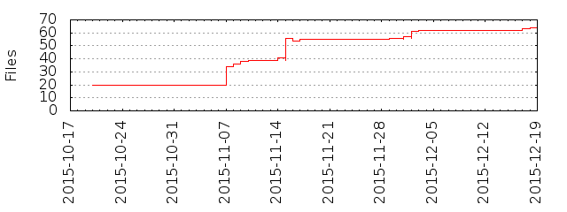

Files
- Total files
- 54
- Total lines
- 11952
- Average file size
- 45055.00 bytes

| Extension | Files (%) | Lines (%) | Lines/file |
|---|
| 5 (9.26%) | 383 (3.20%) | 76 |
| bat | 1 (1.85%) | 231 (1.93%) | 231 |
| conf | 1 (1.85%) | 46 (0.38%) | 46 |
| css | 9 (16.67%) | 7549 (63.16%) | 838 |
| eot | 1 (1.85%) | 105 (0.88%) | 105 |
| html | 10 (18.52%) | 471 (3.94%) | 47 |
| jar | 1 (1.85%) | 4362 (36.50%) | 4362 |
| java | 9 (16.67%) | 462 (3.87%) | 51 |
| js | 5 (9.26%) | 2387 (19.97%) | 477 |
| map | 2 (3.70%) | 0 (0.00%) | 0 |
| png | 1 (1.85%) | 3 (0.03%) | 3 |
| properties | 1 (1.85%) | 4 (0.03%) | 4 |
| sbt | 2 (3.70%) | 39 (0.33%) | 19 |
| sql | 1 (1.85%) | 62 (0.52%) | 62 |
| svg | 1 (1.85%) | 287 (2.40%) | 287 |
| ttf | 1 (1.85%) | 771 (6.45%) | 771 |
| woff | 1 (1.85%) | 93 (0.78%) | 93 |
| woff2 | 1 (1.85%) | 72 (0.60%) | 72 |
| xml | 1 (1.85%) | 22 (0.18%) | 22 |